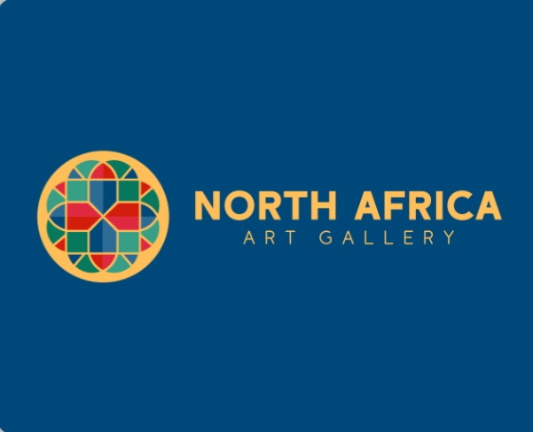

Profil de l'Artiste & Démarche

Nom de l'artiste : Salim Azarou
Région d'ancrage : Meknès, Maroc
Profil professionnel : Artiste plasticien, décorateur, designer et sculpteur.
Slogan / Philosophie : "Sculpter l’héritage."
Avec plus de 20 ans d'expérience, Salim Azarou explore la matière, le relief et la mémoire à travers une démarche unique qui fusionne l'art contemporain et la préservation du patrimoine d'Afrique du Nord. En travaillant des matériaux bruts, de la terre aux enduits précieux, il donne vie à des créations murales, sculpturales et picturales qui s'intègrent aussi bien dans des intérieurs modernes que traditionnels.
Événements & Actualités
Retrouvez ici les dernières expositions, l'ouverture de notre nouvelle boutique et les présentations des nouvelles collections d'art de Salim Azarou.
Synthèse Artistique
L'œuvre de Salim Azarou brille par sa pluralité technique et thématique. En naviguant habilement entre le modelage sculptural de la terre (pisé), la délicatesse des bas-reliefs dorés et la force des portraits picturaux, l'artiste s'impose comme un passeur de mémoire.
Contact & Réseaux Sociaux
Pour toute commande, acquisition d'œuvre ou collaboration artistique :
Email : Slm.azarou.369@gmail.com
WhatsApp : +212 6 80 50 65 39
Instagram : Visiter mon Instagram
Facebook : Visiter ma page Facebook